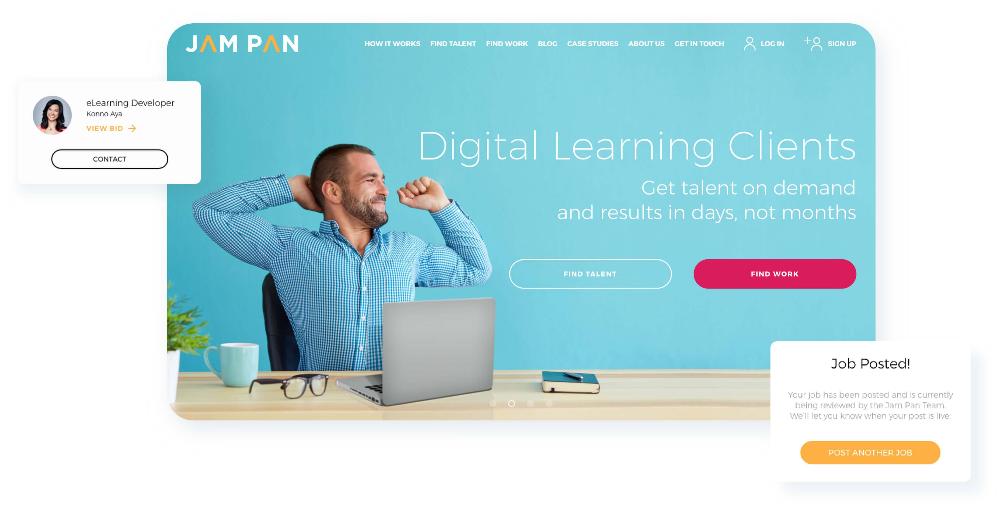
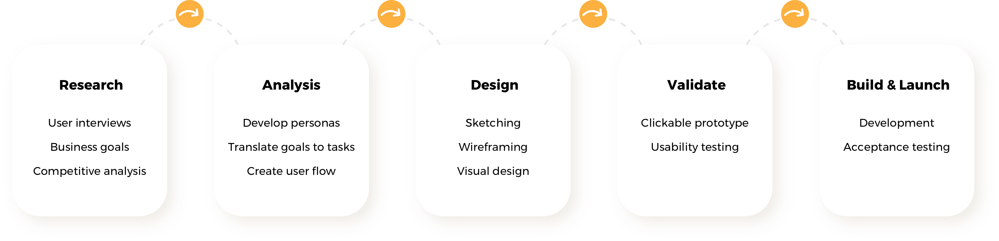
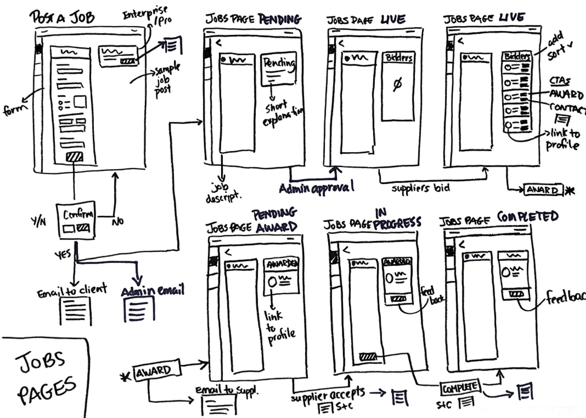
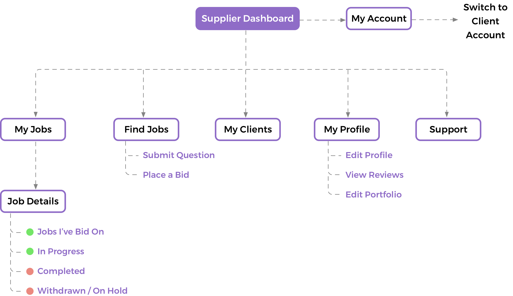
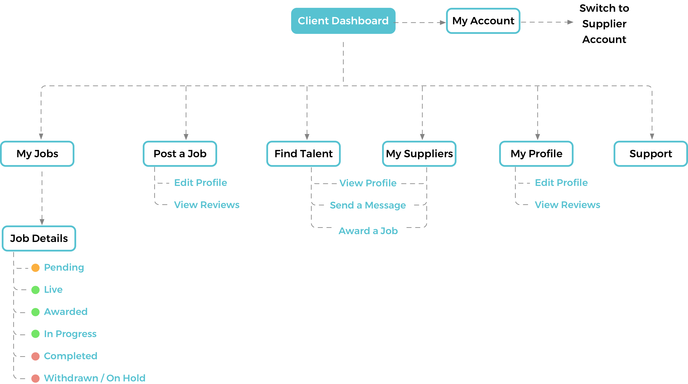

Jam Pan is UK-based business that connects leading brands with talented eLearning freelancers from around the world. The goal of this project was to develop an online space where businesses in need could find and hire eLearning suppliers – a place where they could seamlessly connect in order to conduct business. We delivered a website and an online platform that launched in time for a big industry event – creating a great opportunity for Jam Pan to grow their pool of clients and suppliers.
Hard Deadline: With an industry convention in London fast approaching, the client didn’t want to miss a key opportunity to present their product to potential new clients. This shaped which features to include in the first phase of the project. Being lean was key.
Getting the Flow Right: The client had an idea of how to solve the problem, but we took the time to dig even deeper first. We focussed on mapping out the experience and identifying customer pain points and goals.
Our team included a UX designer, two developers, and a program manager. As the sole designer, I was responsible for conducting research, producing sketches, wireframes, mockups and a prototype, and undertaking usability testing. I worked directly with the client on iterating the user flows, which were a vital component of this project. I also interfaced with our developers to plan and carry out acceptance testing of the platform before its launch.
The competitive analysis gave us an insight into what features other platforms offer, and how they approach the user journey. We focused on the full process, from signing up and creating a profile to being awarded a job.
The platform was designed for two different types of users: the ‘supplier’ who has services to offer, and the ‘client’ who needs to hire someone to carry out a specific job.
Together with the client, we spent a good proportion of the time iterating over the user flow in detail. It’s super important to build a strong foundation before even thinking about the layout. We would go on to use the final flow diagram throughout the whole project to aid conversation, support the developers and act as a springboard to quickly produce the final wireframes.
Two site maps were created, for the supplier and the client, giving us a clearer picture of the navigational hierarchy.
Our robust user flow diagram allowed us to move quickly to build up the page templates. We could create a wireframe and share the layout ideas with the client quite rapidly.

Our robust user flow diagram allowed us to move quickly to build up the page templates. We could create a wireframe and share the layout ideas with the client quite rapidly.

We chose two brand colours and kept the UI simple in order to let the content shine.
Simple and straightforward navigation. Search for your next project, view your jobs, edit your profile – quick access to all the information you need.
Filtered search that allows the user to search find exactly what they’re looking for – search by category, level of expertise, skillset, and location.
Finding the right person to work with is the key to a successful contract.Clients can talk to multiple suppliers for the same job to make sure they find the right match, and negotiate the terms of the contract before making an offer to the supplier. If they don’t see a supplier they want in the list of bidders, they can Invite Their Own Supplier.
All the information you need to get the job done are in one place.
A clickable prototype was built using Marvel. It served two purposes: one to support the developers, and two to act as a usability testing tool.
Stakeholder meetings: Having everyone in the room at the same time proved invaluable. It kept the decision loop short gave us all a chance to all get energized and start to get excited about solving the problem ahead!
User Flow Diagram: Most discussions in the initial phase of the project focused around the user flow diagram. It was used to design the user-interface, to produce the prototype, and as a guide when building the platform.
Online Platform: Following a successful launch, we are taking a short breather and preparing to enter into Phase 2 of the project. We plan to add a messaging feature to the platform.
Measure and Iterate: We’re tracking bug reports and collecting support tickets and user feedback to inform the next phase of the project.